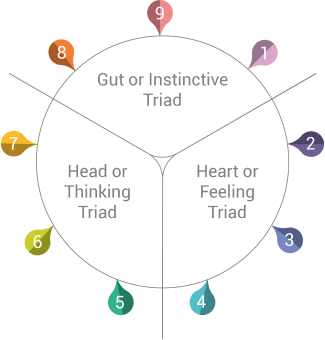

Enneagram Triads
The Enneagram triads are a key part of the Enneagram structure.
Understanding what they mean gives you a deeper insight into each
Enneagram type and how they interconnect.
The triads are a
subdivision of the Enneagram system based on the way each type relates
to reality through three differential centers: Head, Heart, and Gut.

These are the different ways human beings perceive their experiences and
their dominant emotions such as shame, fear, and anger. The Enneagram is
an effective human and self-knowledge tool.
The members of
these Triads are not all the same. Although they could be Enneagram
Wings. Each member manages emotions differently, which is interesting as
it shows that the way we react to things creates reality.
Enneagram 1 and the Gut Triad
Gut Triad types have to deal with their dominant emotion: Anger.
Wondering why? Well, first let’s see which Enneagram types belong to
this Enneagram triad: Enneagram Type 9, Enneagram Type 8, and Enneagram
Type 1 are the ones guided by instinct.
Generally speaking, a
gut feeling is usually not based on logic, data, or facts. You just have
a feeling, a hunch. But it feels so right that you can’t just ignore it.
Some people might even say that we should never ignore our gut feelings
as they possess some kind of wisdom that keeps us safe.
What
these Enneagram Triad members have in common is that they trust their
guts to satisfy their main desires.
9
Enneagram 1 Triads